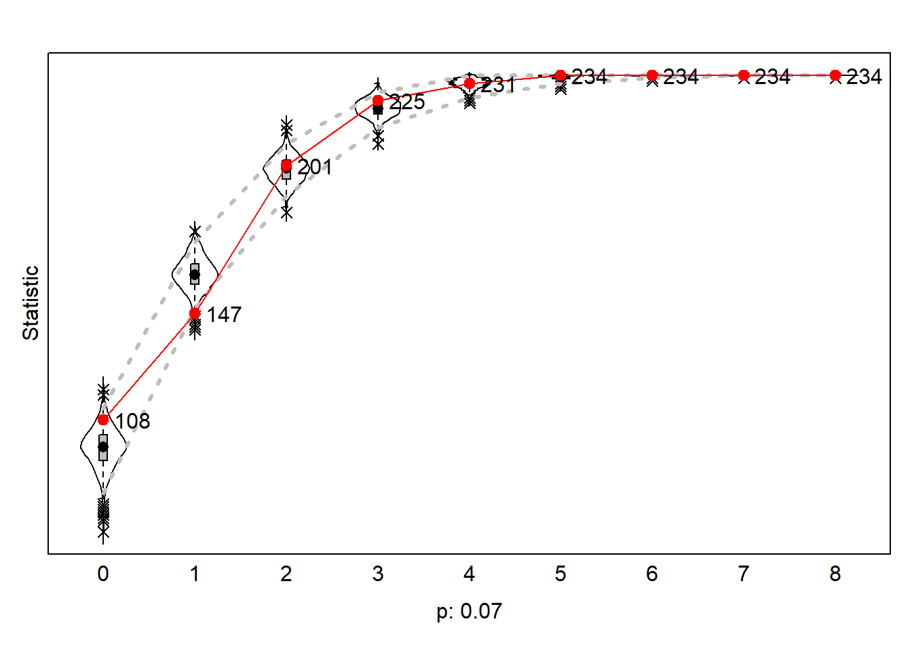

Set up
rm(list = ls())
‘Out of sight, out of mind: a social network approach to
geographical distance and co-authorship collaboration at four Sociology
departments in the Netherlands’
Functions
#---- Loading packages ----
fpackage.check <- function(packages) {
lapply(packages, FUN = function(x) {
if (!require(x, character.only = TRUE)) {
install.packages(x, dependencies = TRUE)
library(x, character.only = TRUE)
}
})
}
#---- Data saving ----
fsave <- function(x, file = NULL, location = "./data/processed/") {
ifelse(!dir.exists("data"), dir.create("data"), FALSE)
ifelse(!dir.exists("data/processed"), dir.create("data/processed"), FALSE)
if (is.null(file))
file = deparse(substitute(x))
datename <- substr(gsub("[:-]", "", Sys.time()), 1, 8)
totalname <- paste(location, file, "_", datename, ".rda", sep = "")
save(x, file = totalname) #need to fix if file is reloaded as input name, not as x.
}
#---- Loading in data ----
fload <- function(filename) {
load(filename)
get(ls()[ls() != "filename"])
}
#---- Output ----
fshowdf <- function(x, ...) {
knitr::kable(x, digits = 2, "html", ...) %>%
kableExtra::kable_styling(bootstrap_options = c("striped", "hover")) %>%
kableExtra::scroll_box(width = "100%", height = "300px")
}
#---- Moran's I ----
fMoran.I <- function(x, weight, scaled = FALSE, na.rm = FALSE, alternative = "two.sided", rowstandardize = TRUE) {
if (rowstandardize) {
if (dim(weight)[1] != dim(weight)[2])
stop("'weight' must be a square matrix")
n <- length(x)
if (dim(weight)[1] != n)
stop("'weight' must have as many rows as observations in 'x'")
ei <- -1/(n - 1)
nas <- is.na(x)
if (any(nas)) {
if (na.rm) {
x <- x[!nas]
n <- length(x)
weight <- weight[!nas, !nas]
} else {
warning("'x' has missing values: maybe you wanted to set na.rm = TRUE?")
return(list(observed = NA, expected = ei, sd = NA, p.value = NA))
}
}
ROWSUM <- rowSums(weight)
ROWSUM[ROWSUM == 0] <- 1
weight <- weight/ROWSUM
s <- sum(weight)
m <- mean(x)
y <- x - m
cv <- sum(weight * y %o% y)
v <- sum(y^2)
obs <- (n/s) * (cv/v)
if (scaled) {
i.max <- (n/s) * (sd(rowSums(weight) * y)/sqrt(v/(n - 1)))
obs <- obs/i.max
}
S1 <- 0.5 * sum((weight + t(weight))^2)
S2 <- sum((apply(weight, 1, sum) + apply(weight, 2, sum))^2)
s.sq <- s^2
k <- (sum(y^4)/n)/(v/n)^2
sdi <- sqrt((n * ((n^2 - 3 * n + 3) * S1 - n * S2 + 3 * s.sq) - k * (n * (n - 1) * S1 - 2 * n *
S2 + 6 * s.sq))/((n - 1) * (n - 2) * (n - 3) * s.sq) - 1/((n - 1)^2))
alternative <- match.arg(alternative, c("two.sided", "less", "greater"))
pv <- pnorm(obs, mean = ei, sd = sdi)
if (alternative == "two.sided")
pv <- if (obs <= ei)
2 * pv else 2 * (1 - pv)
if (alternative == "greater")
pv <- 1 - pv
list(observed = obs, expected = ei, sd = sdi, p.value = pv)
} else {
if (dim(weight)[1] != dim(weight)[2])
stop("'weight' must be a square matrix")
n <- length(x)
if (dim(weight)[1] != n)
stop("'weight' must have as many rows as observations in 'x'")
ei <- -1/(n - 1)
nas <- is.na(x)
if (any(nas)) {
if (na.rm) {
x <- x[!nas]
n <- length(x)
weight <- weight[!nas, !nas]
} else {
warning("'x' has missing values: maybe you wanted to set na.rm = TRUE?")
return(list(observed = NA, expected = ei, sd = NA, p.value = NA))
}
}
# ROWSUM <- rowSums(weight) ROWSUM[ROWSUM == 0] <- 1 weight <- weight/ROWSUM
s <- sum(weight)
m <- mean(x)
y <- x - m
cv <- sum(weight * y %o% y)
v <- sum(y^2)
obs <- (n/s) * (cv/v)
if (scaled) {
i.max <- (n/s) * (sd(rowSums(weight) * y)/sqrt(v/(n - 1)))
obs <- obs/i.max
}
S1 <- 0.5 * sum((weight + t(weight))^2)
S2 <- sum((apply(weight, 1, sum) + apply(weight, 2, sum))^2)
s.sq <- s^2
k <- (sum(y^4)/n)/(v/n)^2
sdi <- sqrt((n * ((n^2 - 3 * n + 3) * S1 - n * S2 + 3 * s.sq) - k * (n * (n - 1) * S1 - 2 * n *
S2 + 6 * s.sq))/((n - 1) * (n - 2) * (n - 3) * s.sq) - 1/((n - 1)^2))
alternative <- match.arg(alternative, c("two.sided", "less", "greater"))
pv <- pnorm(obs, mean = ei, sd = sdi)
if (alternative == "two.sided")
pv <- if (obs <= ei)
2 * pv else 2 * (1 - pv)
if (alternative == "greater")
pv <- 1 - pv
list(observed = obs, expected = ei, sd = sdi, p.value = pv)
}
}
#---- Rsiena GOF auciliary function ----
# ?'sienaGOF-auxiliary'
GeodesicDistribution <- function(i, data, sims, period, groupName, varName, levls = c(1:5, Inf), cumulative = TRUE,
...) {
x <- networkExtraction(i, data, sims, period, groupName, varName)
require(sna)
a <- sna::geodist(symmetrize(x))$gdist
if (cumulative) {
gdi <- sapply(levls, function(i) {
sum(a <= i)
})
} else {
gdi <- sapply(levls, function(i) {
sum(a == i)
})
}
names(gdi) <- as.character(levls)
gdi
}
# The following function is taken from the help page for sienaTest
testall <- function(ans) {
for (i in which(ans$test)) {
sct <- score.Test(ans, i)
cat(ans$requestedEffects$effectName[i], "\n")
print(sct)
}
invisible(score.Test(ans))
}
Libraries
packages <- c("RSiena", "tidyverse", "stringdist", "stringi", "igraph", "sna", "statnet.common")
fpackage.check(packages)
Load in data
ansModel0 <- fload("data/processed/ansModel0_20241101.rda")
ansModel1 <- fload("data/processed/ansModel1_20241101.rda")
ansModel2 <- fload("data/processed/ansModel2_20241101.rda")
ansModel3 <- fload("data/processed/ansModel3_20241101.rda")
Goodness of Fit
In order to evaluate whether the estimated model accurately
represents the network data, the Goodness of Fit is tested. To make this
assessment, the observed network features are compared to the expected
values in the estimated distribution of the networks, based on a large
set of simulations. An inadequate fit means that the estimates are not
reliable and that the model needs to undergo some changes to provide a
somewhat accurate representation of the network.
Model 3 consisted of both ego-related effects and structural effects,
making it the most complete model thus far and therefore the most
meaningful model to run a Goodness of Fit assessment on. For this model,
the indegree distribution and outdegree distribution are evaluated to
test different aspects of the network structure, as I believed these to
be the most relevant for the research questions of this study. The
indegree distribution measures whether the model accurately reflects the
range and frequency of incoming ties observed in the data. The outdegree
distribution measures whether the model accurately reflects the range
and frequency of outgoing ties observed in the data. In a Goodness of
Fit evaluation, a p-value of <0.05 indicates a poor fit and large
p-values indicate good fit. The fit measures of Model 3 suggest that
there is room for improvement; indegree distribution (p=0.01) and
outdegree distribution (p=0.07) and are extremely low and I consider
these a poor fit. In an attempt to improve the model, shared popularity
was added to Model 4, which relates to the tendency of actors in a
network to form ties with others who already share a tie with popular
actors. The addition of this effect barely affected the significance of
indegree distribution (p=0.01) and lowered the outdegree distribution (
p=0.05). Thus, it was decided to try again with another alteration:
Model 5 included the square rooted version outdegree activity as a
replacement for the raw outdegree activity effect. This change resulted
in a decrease in the indegree distribution (p=0.00) and an increase in
the outdegree distribution (p=0.07).
In a last attempt to make the model fit the data a bit better, it was
decided to undo the alterations done for Model 5 and instead include the
square rooted version of indegree popularity in new Model 6. The raw
effect of indegree popularity was excluded in this model. This final
attempt resulted in more noticeable changes in the Goodness of Fit of
the model: the results still show an insufficient indegree distribution
(p=0.00), but an acceptable outdegree distribution (p=0.32).
Looking at these final Goodness of Fit distribution plots, we can see
that the red line (the values in the outcome network) is quite similar
to the outcome of the simulated networks. While the true network and
simulations appear quite similar in both plots, only the outdegree
distribution was significant enough to meaningfully interpret. In the
outdegree distribution plot, it can be observed that there are 108
scholars without any outdegrees, 147 scholars with one outdegree, and so
on. The red line above the zero outdegree estimate indicates some
underestimation in the simulated networks for the scholars with zero
outdegrees, the red line under the one outdegree estimate indicates an
overestimation of this group of scholars in the simulated networks. The
rest of the estimates appear rather similar. In the indegree
distribution plot, scholars with zero and one indegree appear
underestimated in the simulated networks. However, since this fit of
this model is insufficient, it is best to refrain from any conclusions
based on this plot.
As I was out of ideas on what alterations I could implement to
improve the model fit, I decided to leave the model alone for now. I
realize that this would not be sufficient for a regular social networks
paper, but this is what I was able to do for now.
GOF - Model 3
# testing GOF model 0 gofo0 <- sienaGOF(ansModel0, OutdegreeDistribution, verbose = FALSE, join =
# TRUE, levls = c(0:10, 15, 20), varName = 'net') gofi0 <- sienaGOF(ansModel0,
# IndegreeDistribution, verbose = FALSE, join = TRUE, varName = 'net') gof0.gd <-
# sienaGOF(ansModel0, GeodesicDistribution, cumulative = FALSE, verbose = FALSE, join = TRUE,
# varName = 'net')
# plot(gofi0, main = '') plot(gofo0, main = '') plot(gof0.gd, main = '')
gofo3 <- sienaGOF(ansModel3, OutdegreeDistribution, verbose = FALSE, join = TRUE, levls = c(0:10, 15,
20), varName = "net")
gofi3 <- sienaGOF(ansModel3, IndegreeDistribution, verbose = FALSE, join = TRUE, varName = "net")
# gof3.gd <- sienaGOF(ansModel3, GeodesicDistribution, cumulative = FALSE, verbose = FALSE, join =
# TRUE, varName = 'net')
Outdegree
distribution
plot(gofo3, main = "")
#> Note: some statistics are not plotted because their variance is 0.
#> This holds for the statistics: 9 10 15 20.

## Indegree distribution
plot(gofi3, main = "")
GOF - Model 4
ansModel4 <- fload("data/processed/ansModel4_20241103.rda")
gofo4 <- sienaGOF(ansModel4, OutdegreeDistribution, verbose = FALSE, join = TRUE, levls = c(0:10, 15,
20), varName = "net")
gofi4 <- sienaGOF(ansModel4, IndegreeDistribution, verbose = FALSE, join = TRUE, varName = "net")
# gof4.gd <- sienaGOF(ansModel4, GeodesicDistribution, cumulative = FALSE, verbose = FALSE, join =
# TRUE, varName = 'net')
Outdegree
distribution
plot(gofo4, main = "")
#> Note: some statistics are not plotted because their variance is 0.
#> This holds for the statistics: 8 9 10 15 20.
 ## Indegree distribution
## Indegree distribution
plot(gofi4, main = "")
GOF - Model 5
ansModel5 <- fload("data/processed/ansModel5_20241107.rda")
gofo5 <- sienaGOF(ansModel5, OutdegreeDistribution, verbose = FALSE, join = TRUE, levls = c(0:10, 15,
20), varName = "net")
gofi5 <- sienaGOF(ansModel5, IndegreeDistribution, verbose = FALSE, join = TRUE, varName = "net")
# gof5.gd <- sienaGOF(ansModel5, GeodesicDistribution, cumulative = FALSE, verbose = FALSE, join =
# TRUE, varName = 'net')
Outdegree
distribution
plot(gofo5, main = "")
#> Note: some statistics are not plotted because their variance is 0.
#> This holds for the statistics: 9 10 15 20.
Indegree
distribution
plot(gofi5, main = "")
GOF - Model 6
ansModel6 <- fload("data/processed/ansModel6_20241107.rda")
gofo6 <- sienaGOF(ansModel6, OutdegreeDistribution, verbose = FALSE, join = TRUE, levls = c(0:10, 15,
20), varName = "net")
gofi6 <- sienaGOF(ansModel6, IndegreeDistribution, verbose = FALSE, join = TRUE, varName = "net")
# gof6.gd <- sienaGOF(ansModel6, GeodesicDistribution, cumulative = FALSE, verbose = FALSE, join =
# TRUE, varName = 'net')
Outdegree
distribution
plot(gofo6, main = "")
#> Note: some statistics are not plotted because their variance is 0.
#> This holds for the statistics: 8 9 10 15 20.
Indegree
distribution
plot(gofi6, main = "")
LS0tDQp0aXRsZTogIkdvb2RuZXNzIG9mIEZpdCINCmF1dGhvcjogImJ5OiBGcmlkYSB2YW4gVGVpamxpbmdlbiINCmJpYmxpb2dyYXBoeTogcmVmZXJlbmNlcy5iaWINCi0tLQ0KDQpgYGB7PWh0bWx9DQo8c3R5bGU+DQpib2R5IHsNCnRleHQtYWxpZ246IGp1c3RpZnl9DQo8L3N0eWxlPg0KYGBgDQoNCiMgU2V0IHVwDQpgYGB7cn0NCnJtKGxpc3QgPSBscygpKQ0KYGBgDQoNCmBgYHtyIHdhcm5pbmc9RkFMU0UsIGdsb2JhbHNldHRpbmdzLCBlY2hvPUZBTFNFLCByZXN1bHRzPSdoaWRlJ30NCg0KbGlicmFyeShrbml0cikNCmxpYnJhcnkoZm9ybWF0UikNCg0Ka25pdHI6Om9wdHNfY2h1bmskc2V0KGVjaG8gPSBUUlVFKQ0Kb3B0c19jaHVuayRzZXQodGlkeS5vcHRzPWxpc3Qod2lkdGguY3V0b2ZmPTEwMCksdGlkeT1UUlVFLCB3YXJuaW5nID0gRkFMU0UsIG1lc3NhZ2UgPSBGQUxTRSxjb21tZW50ID0gIiM+IiwgY2FjaGU9VFJVRSwgY2xhc3Muc291cmNlPWMoInRlc3QiKSwgY2xhc3Mub3V0cHV0PWMoInRlc3QyIikpDQpvcHRpb25zKHdpZHRoID0gMTAwKQ0KcmdsOjpzZXR1cEtuaXRyKCkNCg0KYGBgDQoNCmBgYHtyIGtsaXBweSwgZWNobz1GQUxTRSwgaW5jbHVkZT1UUlVFfQ0Ka2xpcHB5OjprbGlwcHkocG9zaXRpb24gPSBjKCd0b3AnLCAncmlnaHQnKSkNCmBgYA0KDQoNCioqKuKAmE91dCBvZiBzaWdodCwgb3V0IG9mIG1pbmQ6IGEgc29jaWFsIG5ldHdvcmsgYXBwcm9hY2ggdG8gZ2VvZ3JhcGhpY2FsIGRpc3RhbmNlIGFuZCBjby1hdXRob3JzaGlwIGNvbGxhYm9yYXRpb24gYXQgZm91ciBTb2Npb2xvZ3kgZGVwYXJ0bWVudHMgaW4gdGhlIE5ldGhlcmxhbmRz4oCZKioqDQoNCi0tLS0tLS0tLS0tLS0tLS0tLS0tLS0tLS0tLS0tLS0tDQoNCg0KIyMgRnVuY3Rpb25zDQpgYGB7cn0NCiMtLS0tIExvYWRpbmcgcGFja2FnZXMgLS0tLQ0KZnBhY2thZ2UuY2hlY2sgPC0gZnVuY3Rpb24ocGFja2FnZXMpIHsNCiAgICBsYXBwbHkocGFja2FnZXMsIEZVTiA9IGZ1bmN0aW9uKHgpIHsNCiAgICAgICAgaWYgKCFyZXF1aXJlKHgsIGNoYXJhY3Rlci5vbmx5ID0gVFJVRSkpIHsNCiAgICAgICAgICAgIGluc3RhbGwucGFja2FnZXMoeCwgZGVwZW5kZW5jaWVzID0gVFJVRSkNCiAgICAgICAgICAgIGxpYnJhcnkoeCwgY2hhcmFjdGVyLm9ubHkgPSBUUlVFKQ0KICAgICAgICB9DQogICAgfSkNCn0NCg0KIy0tLS0gRGF0YSBzYXZpbmcgLS0tLQ0KZnNhdmUgPC0gZnVuY3Rpb24oeCwgZmlsZSA9IE5VTEwsIGxvY2F0aW9uID0gIi4vZGF0YS9wcm9jZXNzZWQvIikgew0KICAgIGlmZWxzZSghZGlyLmV4aXN0cygiZGF0YSIpLCBkaXIuY3JlYXRlKCJkYXRhIiksIEZBTFNFKQ0KICAgIGlmZWxzZSghZGlyLmV4aXN0cygiZGF0YS9wcm9jZXNzZWQiKSwgZGlyLmNyZWF0ZSgiZGF0YS9wcm9jZXNzZWQiKSwgRkFMU0UpDQogICAgaWYgKGlzLm51bGwoZmlsZSkpDQogICAgICAgIGZpbGUgPSBkZXBhcnNlKHN1YnN0aXR1dGUoeCkpDQogICAgZGF0ZW5hbWUgPC0gc3Vic3RyKGdzdWIoIls6LV0iLCAiIiwgU3lzLnRpbWUoKSksIDEsIDgpDQogICAgdG90YWxuYW1lIDwtIHBhc3RlKGxvY2F0aW9uLCBmaWxlLCAiXyIsIGRhdGVuYW1lLCAiLnJkYSIsIHNlcCA9ICIiKQ0KICAgIHNhdmUoeCwgZmlsZSA9IHRvdGFsbmFtZSkgICNuZWVkIHRvIGZpeCBpZiBmaWxlIGlzIHJlbG9hZGVkIGFzIGlucHV0IG5hbWUsIG5vdCBhcyB4LiANCn0NCg0KIy0tLS0gTG9hZGluZyBpbiBkYXRhIC0tLS0NCmZsb2FkIDwtIGZ1bmN0aW9uKGZpbGVuYW1lKSB7DQogICAgbG9hZChmaWxlbmFtZSkNCiAgICBnZXQobHMoKVtscygpICE9ICJmaWxlbmFtZSJdKQ0KfQ0KDQojLS0tLSBPdXRwdXQgLS0tLQ0KZnNob3dkZiA8LSBmdW5jdGlvbih4LCAuLi4pIHsNCiAgICBrbml0cjo6a2FibGUoeCwgZGlnaXRzID0gMiwgImh0bWwiLCAuLi4pICU+JQ0KICAgICAgICBrYWJsZUV4dHJhOjprYWJsZV9zdHlsaW5nKGJvb3RzdHJhcF9vcHRpb25zID0gYygic3RyaXBlZCIsICJob3ZlciIpKSAlPiUNCiAgICAgICAga2FibGVFeHRyYTo6c2Nyb2xsX2JveCh3aWR0aCA9ICIxMDAlIiwgaGVpZ2h0ID0gIjMwMHB4IikNCn0NCg0KDQojLS0tLSBNb3JhbidzIEkgLS0tLQ0KZk1vcmFuLkkgPC0gZnVuY3Rpb24oeCwgd2VpZ2h0LCBzY2FsZWQgPSBGQUxTRSwgbmEucm0gPSBGQUxTRSwgYWx0ZXJuYXRpdmUgPSAidHdvLnNpZGVkIiwgcm93c3RhbmRhcmRpemUgPSBUUlVFKSB7DQogICAgaWYgKHJvd3N0YW5kYXJkaXplKSB7DQogICAgICAgIGlmIChkaW0od2VpZ2h0KVsxXSAhPSBkaW0od2VpZ2h0KVsyXSkNCiAgICAgICAgICAgIHN0b3AoIid3ZWlnaHQnIG11c3QgYmUgYSBzcXVhcmUgbWF0cml4IikNCiAgICAgICAgbiA8LSBsZW5ndGgoeCkNCiAgICAgICAgaWYgKGRpbSh3ZWlnaHQpWzFdICE9IG4pDQogICAgICAgICAgICBzdG9wKCInd2VpZ2h0JyBtdXN0IGhhdmUgYXMgbWFueSByb3dzIGFzIG9ic2VydmF0aW9ucyBpbiAneCciKQ0KICAgICAgICBlaSA8LSAtMS8obiAtIDEpDQogICAgICAgIG5hcyA8LSBpcy5uYSh4KQ0KICAgICAgICBpZiAoYW55KG5hcykpIHsNCiAgICAgICAgICAgIGlmIChuYS5ybSkgew0KICAgICAgICAgICAgICAgIHggPC0geFshbmFzXQ0KICAgICAgICAgICAgICAgIG4gPC0gbGVuZ3RoKHgpDQogICAgICAgICAgICAgICAgd2VpZ2h0IDwtIHdlaWdodFshbmFzLCAhbmFzXQ0KICAgICAgICAgICAgfSBlbHNlIHsNCiAgICAgICAgICAgICAgICB3YXJuaW5nKCIneCcgaGFzIG1pc3NpbmcgdmFsdWVzOiBtYXliZSB5b3Ugd2FudGVkIHRvIHNldCBuYS5ybSA9IFRSVUU/IikNCiAgICAgICAgICAgICAgICByZXR1cm4obGlzdChvYnNlcnZlZCA9IE5BLCBleHBlY3RlZCA9IGVpLCBzZCA9IE5BLCBwLnZhbHVlID0gTkEpKQ0KICAgICAgICAgICAgfQ0KICAgICAgICB9DQogICAgICAgIFJPV1NVTSA8LSByb3dTdW1zKHdlaWdodCkNCiAgICAgICAgUk9XU1VNW1JPV1NVTSA9PSAwXSA8LSAxDQogICAgICAgIHdlaWdodCA8LSB3ZWlnaHQvUk9XU1VNDQogICAgICAgIHMgPC0gc3VtKHdlaWdodCkNCiAgICAgICAgbSA8LSBtZWFuKHgpDQogICAgICAgIHkgPC0geCAtIG0NCiAgICAgICAgY3YgPC0gc3VtKHdlaWdodCAqIHkgJW8lIHkpDQogICAgICAgIHYgPC0gc3VtKHleMikNCiAgICAgICAgb2JzIDwtIChuL3MpICogKGN2L3YpDQogICAgICAgIGlmIChzY2FsZWQpIHsNCiAgICAgICAgICAgIGkubWF4IDwtIChuL3MpICogKHNkKHJvd1N1bXMod2VpZ2h0KSAqIHkpL3NxcnQodi8obiAtIDEpKSkNCiAgICAgICAgICAgIG9icyA8LSBvYnMvaS5tYXgNCiAgICAgICAgfQ0KICAgICAgICBTMSA8LSAwLjUgKiBzdW0oKHdlaWdodCArIHQod2VpZ2h0KSleMikNCiAgICAgICAgUzIgPC0gc3VtKChhcHBseSh3ZWlnaHQsIDEsIHN1bSkgKyBhcHBseSh3ZWlnaHQsIDIsIHN1bSkpXjIpDQogICAgICAgIHMuc3EgPC0gc14yDQogICAgICAgIGsgPC0gKHN1bSh5XjQpL24pLyh2L24pXjINCiAgICAgICAgc2RpIDwtIHNxcnQoKG4gKiAoKG5eMiAtIDMgKiBuICsgMykgKiBTMSAtIG4gKiBTMiArIDMgKiBzLnNxKSAtIGsgKiAobiAqIChuIC0gMSkgKiBTMSAtIDIgKiBuICoNCiAgICAgICAgICAgIFMyICsgNiAqIHMuc3EpKS8oKG4gLSAxKSAqIChuIC0gMikgKiAobiAtIDMpICogcy5zcSkgLSAxLygobiAtIDEpXjIpKQ0KICAgICAgICBhbHRlcm5hdGl2ZSA8LSBtYXRjaC5hcmcoYWx0ZXJuYXRpdmUsIGMoInR3by5zaWRlZCIsICJsZXNzIiwgImdyZWF0ZXIiKSkNCiAgICAgICAgcHYgPC0gcG5vcm0ob2JzLCBtZWFuID0gZWksIHNkID0gc2RpKQ0KICAgICAgICBpZiAoYWx0ZXJuYXRpdmUgPT0gInR3by5zaWRlZCIpDQogICAgICAgICAgICBwdiA8LSBpZiAob2JzIDw9IGVpKQ0KICAgICAgICAgICAgICAgIDIgKiBwdiBlbHNlIDIgKiAoMSAtIHB2KQ0KICAgICAgICBpZiAoYWx0ZXJuYXRpdmUgPT0gImdyZWF0ZXIiKQ0KICAgICAgICAgICAgcHYgPC0gMSAtIHB2DQogICAgICAgIGxpc3Qob2JzZXJ2ZWQgPSBvYnMsIGV4cGVjdGVkID0gZWksIHNkID0gc2RpLCBwLnZhbHVlID0gcHYpDQogICAgfSBlbHNlIHsNCiAgICAgICAgaWYgKGRpbSh3ZWlnaHQpWzFdICE9IGRpbSh3ZWlnaHQpWzJdKQ0KICAgICAgICAgICAgc3RvcCgiJ3dlaWdodCcgbXVzdCBiZSBhIHNxdWFyZSBtYXRyaXgiKQ0KICAgICAgICBuIDwtIGxlbmd0aCh4KQ0KICAgICAgICBpZiAoZGltKHdlaWdodClbMV0gIT0gbikNCiAgICAgICAgICAgIHN0b3AoIid3ZWlnaHQnIG11c3QgaGF2ZSBhcyBtYW55IHJvd3MgYXMgb2JzZXJ2YXRpb25zIGluICd4JyIpDQogICAgICAgIGVpIDwtIC0xLyhuIC0gMSkNCiAgICAgICAgbmFzIDwtIGlzLm5hKHgpDQogICAgICAgIGlmIChhbnkobmFzKSkgew0KICAgICAgICAgICAgaWYgKG5hLnJtKSB7DQogICAgICAgICAgICAgICAgeCA8LSB4WyFuYXNdDQogICAgICAgICAgICAgICAgbiA8LSBsZW5ndGgoeCkNCiAgICAgICAgICAgICAgICB3ZWlnaHQgPC0gd2VpZ2h0WyFuYXMsICFuYXNdDQogICAgICAgICAgICB9IGVsc2Ugew0KICAgICAgICAgICAgICAgIHdhcm5pbmcoIid4JyBoYXMgbWlzc2luZyB2YWx1ZXM6IG1heWJlIHlvdSB3YW50ZWQgdG8gc2V0IG5hLnJtID0gVFJVRT8iKQ0KICAgICAgICAgICAgICAgIHJldHVybihsaXN0KG9ic2VydmVkID0gTkEsIGV4cGVjdGVkID0gZWksIHNkID0gTkEsIHAudmFsdWUgPSBOQSkpDQogICAgICAgICAgICB9DQogICAgICAgIH0NCiAgICAgICAgIyBST1dTVU0gPC0gcm93U3Vtcyh3ZWlnaHQpIFJPV1NVTVtST1dTVU0gPT0gMF0gPC0gMSB3ZWlnaHQgPC0gd2VpZ2h0L1JPV1NVTQ0KICAgICAgICBzIDwtIHN1bSh3ZWlnaHQpDQogICAgICAgIG0gPC0gbWVhbih4KQ0KICAgICAgICB5IDwtIHggLSBtDQogICAgICAgIGN2IDwtIHN1bSh3ZWlnaHQgKiB5ICVvJSB5KQ0KICAgICAgICB2IDwtIHN1bSh5XjIpDQogICAgICAgIG9icyA8LSAobi9zKSAqIChjdi92KQ0KICAgICAgICBpZiAoc2NhbGVkKSB7DQogICAgICAgICAgICBpLm1heCA8LSAobi9zKSAqIChzZChyb3dTdW1zKHdlaWdodCkgKiB5KS9zcXJ0KHYvKG4gLSAxKSkpDQogICAgICAgICAgICBvYnMgPC0gb2JzL2kubWF4DQogICAgICAgIH0NCiAgICAgICAgUzEgPC0gMC41ICogc3VtKCh3ZWlnaHQgKyB0KHdlaWdodCkpXjIpDQogICAgICAgIFMyIDwtIHN1bSgoYXBwbHkod2VpZ2h0LCAxLCBzdW0pICsgYXBwbHkod2VpZ2h0LCAyLCBzdW0pKV4yKQ0KICAgICAgICBzLnNxIDwtIHNeMg0KICAgICAgICBrIDwtIChzdW0oeV40KS9uKS8odi9uKV4yDQogICAgICAgIHNkaSA8LSBzcXJ0KChuICogKChuXjIgLSAzICogbiArIDMpICogUzEgLSBuICogUzIgKyAzICogcy5zcSkgLSBrICogKG4gKiAobiAtIDEpICogUzEgLSAyICogbiAqDQogICAgICAgICAgICBTMiArIDYgKiBzLnNxKSkvKChuIC0gMSkgKiAobiAtIDIpICogKG4gLSAzKSAqIHMuc3EpIC0gMS8oKG4gLSAxKV4yKSkNCiAgICAgICAgYWx0ZXJuYXRpdmUgPC0gbWF0Y2guYXJnKGFsdGVybmF0aXZlLCBjKCJ0d28uc2lkZWQiLCAibGVzcyIsICJncmVhdGVyIikpDQogICAgICAgIHB2IDwtIHBub3JtKG9icywgbWVhbiA9IGVpLCBzZCA9IHNkaSkNCiAgICAgICAgaWYgKGFsdGVybmF0aXZlID09ICJ0d28uc2lkZWQiKQ0KICAgICAgICAgICAgcHYgPC0gaWYgKG9icyA8PSBlaSkNCiAgICAgICAgICAgICAgICAyICogcHYgZWxzZSAyICogKDEgLSBwdikNCiAgICAgICAgaWYgKGFsdGVybmF0aXZlID09ICJncmVhdGVyIikNCiAgICAgICAgICAgIHB2IDwtIDEgLSBwdg0KICAgICAgICBsaXN0KG9ic2VydmVkID0gb2JzLCBleHBlY3RlZCA9IGVpLCBzZCA9IHNkaSwgcC52YWx1ZSA9IHB2KQ0KICAgIH0NCg0KDQp9DQoNCg0KDQojLS0tLSBSc2llbmEgR09GIGF1Y2lsaWFyeSBmdW5jdGlvbiAtLS0tDQojPydzaWVuYUdPRi1hdXhpbGlhcnknDQpHZW9kZXNpY0Rpc3RyaWJ1dGlvbiA8LSBmdW5jdGlvbihpLCBkYXRhLCBzaW1zLCBwZXJpb2QsIGdyb3VwTmFtZSwgdmFyTmFtZSwgbGV2bHMgPSBjKDE6NSwgSW5mKSwgY3VtdWxhdGl2ZSA9IFRSVUUsDQogICAgLi4uKSB7DQogICAgeCA8LSBuZXR3b3JrRXh0cmFjdGlvbihpLCBkYXRhLCBzaW1zLCBwZXJpb2QsIGdyb3VwTmFtZSwgdmFyTmFtZSkNCiAgICByZXF1aXJlKHNuYSkNCiAgICBhIDwtIHNuYTo6Z2VvZGlzdChzeW1tZXRyaXplKHgpKSRnZGlzdA0KICAgIGlmIChjdW11bGF0aXZlKSB7DQogICAgICAgIGdkaSA8LSBzYXBwbHkobGV2bHMsIGZ1bmN0aW9uKGkpIHsNCiAgICAgICAgICAgIHN1bShhIDw9IGkpDQogICAgICAgIH0pDQogICAgfSBlbHNlIHsNCiAgICAgICAgZ2RpIDwtIHNhcHBseShsZXZscywgZnVuY3Rpb24oaSkgew0KICAgICAgICAgICAgc3VtKGEgPT0gaSkNCiAgICAgICAgfSkNCiAgICB9DQogICAgbmFtZXMoZ2RpKSA8LSBhcy5jaGFyYWN0ZXIobGV2bHMpDQogICAgZ2RpDQp9DQoNCiMgVGhlIGZvbGxvd2luZyBmdW5jdGlvbiBpcyB0YWtlbiBmcm9tIHRoZSBoZWxwIHBhZ2UgZm9yIHNpZW5hVGVzdA0KDQp0ZXN0YWxsIDwtIGZ1bmN0aW9uKGFucykgew0KICAgIGZvciAoaSBpbiB3aGljaChhbnMkdGVzdCkpIHsNCiAgICAgICAgc2N0IDwtIHNjb3JlLlRlc3QoYW5zLCBpKQ0KICAgICAgICBjYXQoYW5zJHJlcXVlc3RlZEVmZmVjdHMkZWZmZWN0TmFtZVtpXSwgIlxuIikNCiAgICAgICAgcHJpbnQoc2N0KQ0KICAgIH0NCiAgICBpbnZpc2libGUoc2NvcmUuVGVzdChhbnMpKQ0KfQ0KDQpgYGANCg0KDQojIyBMaWJyYXJpZXMNCg0KYGBge3IsIHdhcm5pbmc9RkFMU0UsIG1lc3NhZ2U9RkFMU0UsIHJlc3VsdHM9J2hpZGUnfQ0KcGFja2FnZXMgPC0gYygiUlNpZW5hIiwgInRpZHl2ZXJzZSIsICJzdHJpbmdkaXN0IiwgInN0cmluZ2kiLCAiaWdyYXBoIiwgInNuYSIsICJzdGF0bmV0LmNvbW1vbiIpDQpmcGFja2FnZS5jaGVjayhwYWNrYWdlcykNCmBgYA0KDQoNCiMjIExvYWQgaW4gZGF0YQ0KYGBge3J9DQphbnNNb2RlbDAgPC0gZmxvYWQoImRhdGEvcHJvY2Vzc2VkL2Fuc01vZGVsMF8yMDI0MTEwMS5yZGEiKQ0KYW5zTW9kZWwxIDwtIGZsb2FkKCJkYXRhL3Byb2Nlc3NlZC9hbnNNb2RlbDFfMjAyNDExMDEucmRhIikNCmFuc01vZGVsMiA8LSBmbG9hZCgiZGF0YS9wcm9jZXNzZWQvYW5zTW9kZWwyXzIwMjQxMTAxLnJkYSIpDQphbnNNb2RlbDMgPC0gZmxvYWQoImRhdGEvcHJvY2Vzc2VkL2Fuc01vZGVsM18yMDI0MTEwMS5yZGEiKQ0KYGBgDQoNCi0tLS0tLS0tLS0tLS0tLS0tLS0tLS0tLS0tLS0tLS0tLS0tLS0tLQ0KDQojIEdvb2RuZXNzIG9mIEZpdA0KSW4gb3JkZXIgdG8gZXZhbHVhdGUgd2hldGhlciB0aGUgZXN0aW1hdGVkIG1vZGVsIGFjY3VyYXRlbHkgcmVwcmVzZW50cyB0aGUgbmV0d29yayBkYXRhLCB0aGUgR29vZG5lc3Mgb2YgRml0IGlzIHRlc3RlZC4gVG8gbWFrZSB0aGlzIGFzc2Vzc21lbnQsIHRoZSBvYnNlcnZlZCBuZXR3b3JrIGZlYXR1cmVzIGFyZSBjb21wYXJlZCB0byB0aGUgZXhwZWN0ZWQgdmFsdWVzIGluIHRoZSBlc3RpbWF0ZWQgZGlzdHJpYnV0aW9uIG9mIHRoZSBuZXR3b3JrcywgYmFzZWQgb24gYSBsYXJnZSBzZXQgb2Ygc2ltdWxhdGlvbnMuIEFuIGluYWRlcXVhdGUgZml0IG1lYW5zIHRoYXQgdGhlIGVzdGltYXRlcyBhcmUgbm90IHJlbGlhYmxlIGFuZCB0aGF0IHRoZSBtb2RlbCBuZWVkcyB0byB1bmRlcmdvIHNvbWUgY2hhbmdlcyB0byBwcm92aWRlIGEgc29tZXdoYXQgYWNjdXJhdGUgcmVwcmVzZW50YXRpb24gb2YgdGhlIG5ldHdvcmsuIA0KDQpNb2RlbCAzIGNvbnNpc3RlZCBvZiBib3RoIGVnby1yZWxhdGVkIGVmZmVjdHMgYW5kIHN0cnVjdHVyYWwgZWZmZWN0cywgbWFraW5nIGl0IHRoZSBtb3N0IGNvbXBsZXRlIG1vZGVsIHRodXMgZmFyIGFuZCB0aGVyZWZvcmUgdGhlIG1vc3QgbWVhbmluZ2Z1bCBtb2RlbCB0byBydW4gYSBHb29kbmVzcyBvZiBGaXQgYXNzZXNzbWVudCBvbi4gRm9yIHRoaXMgbW9kZWwsIHRoZSBpbmRlZ3JlZSBkaXN0cmlidXRpb24gYW5kIG91dGRlZ3JlZSBkaXN0cmlidXRpb24gYXJlIGV2YWx1YXRlZCB0byB0ZXN0IGRpZmZlcmVudCBhc3BlY3RzIG9mIHRoZSBuZXR3b3JrIHN0cnVjdHVyZSwgYXMgSSBiZWxpZXZlZCB0aGVzZSB0byBiZSB0aGUgbW9zdCByZWxldmFudCBmb3IgdGhlIHJlc2VhcmNoIHF1ZXN0aW9ucyBvZiB0aGlzIHN0dWR5LiBUaGUgaW5kZWdyZWUgZGlzdHJpYnV0aW9uIG1lYXN1cmVzIHdoZXRoZXIgdGhlIG1vZGVsIGFjY3VyYXRlbHkgcmVmbGVjdHMgdGhlIHJhbmdlIGFuZCBmcmVxdWVuY3kgb2YgaW5jb21pbmcgdGllcyBvYnNlcnZlZCBpbiB0aGUgZGF0YS4gVGhlIG91dGRlZ3JlZSBkaXN0cmlidXRpb24gbWVhc3VyZXMgd2hldGhlciB0aGUgbW9kZWwgYWNjdXJhdGVseSByZWZsZWN0cyB0aGUgcmFuZ2UgYW5kIGZyZXF1ZW5jeSBvZiBvdXRnb2luZyB0aWVzIG9ic2VydmVkIGluIHRoZSBkYXRhLg0KSW4gYSBHb29kbmVzcyBvZiBGaXQgZXZhbHVhdGlvbiwgYSBwLXZhbHVlIG9mIDwwLjA1IGluZGljYXRlcyBhIHBvb3IgZml0IGFuZCBsYXJnZSBwLXZhbHVlcyBpbmRpY2F0ZSBnb29kIGZpdC4gVGhlIGZpdCBtZWFzdXJlcyBvZiBNb2RlbCAzIHN1Z2dlc3QgdGhhdCB0aGVyZSBpcyByb29tIGZvciBpbXByb3ZlbWVudDsgaW5kZWdyZWUgZGlzdHJpYnV0aW9uIChwPTAuMDEpIGFuZCBvdXRkZWdyZWUgZGlzdHJpYnV0aW9uIChwPTAuMDcpIGFuZCBhcmUgZXh0cmVtZWx5IGxvdyBhbmQgSSBjb25zaWRlciB0aGVzZSBhIHBvb3IgZml0LiBJbiBhbiBhdHRlbXB0IHRvIGltcHJvdmUgdGhlIG1vZGVsLCBzaGFyZWQgcG9wdWxhcml0eSB3YXMgYWRkZWQgdG8gTW9kZWwgNCwgd2hpY2ggcmVsYXRlcyB0byB0aGUgdGVuZGVuY3kgb2YgYWN0b3JzIGluIGEgbmV0d29yayB0byBmb3JtIHRpZXMgd2l0aCBvdGhlcnMgd2hvIGFscmVhZHkgc2hhcmUgYSB0aWUgd2l0aCBwb3B1bGFyIGFjdG9ycy4gVGhlIGFkZGl0aW9uIG9mIHRoaXMgZWZmZWN0IGJhcmVseSBhZmZlY3RlZCB0aGUgc2lnbmlmaWNhbmNlIG9mIGluZGVncmVlIGRpc3RyaWJ1dGlvbiAocD0wLjAxKSBhbmQgbG93ZXJlZCB0aGUgb3V0ZGVncmVlIGRpc3RyaWJ1dGlvbiAoIHA9MC4wNSkuIFRodXMsIGl0IHdhcyBkZWNpZGVkIHRvIHRyeSBhZ2FpbiB3aXRoIGFub3RoZXIgYWx0ZXJhdGlvbjogTW9kZWwgNSBpbmNsdWRlZCB0aGUgc3F1YXJlIHJvb3RlZCB2ZXJzaW9uIG91dGRlZ3JlZSBhY3Rpdml0eSBhcyBhIHJlcGxhY2VtZW50IGZvciB0aGUgcmF3IG91dGRlZ3JlZSBhY3Rpdml0eSBlZmZlY3QuIFRoaXMgY2hhbmdlIHJlc3VsdGVkIGluIGEgZGVjcmVhc2UgaW4gdGhlIGluZGVncmVlIGRpc3RyaWJ1dGlvbiAocD0wLjAwKSBhbmQgYW4gaW5jcmVhc2UgaW4gdGhlIG91dGRlZ3JlZSBkaXN0cmlidXRpb24gKHA9MC4wNykuDQoNCkluIGEgbGFzdCBhdHRlbXB0IHRvIG1ha2UgdGhlIG1vZGVsIGZpdCB0aGUgZGF0YSBhIGJpdCBiZXR0ZXIsIGl0IHdhcyBkZWNpZGVkIHRvIHVuZG8gdGhlIGFsdGVyYXRpb25zIGRvbmUgZm9yIE1vZGVsIDUgYW5kIGluc3RlYWQgaW5jbHVkZSB0aGUgc3F1YXJlIHJvb3RlZCB2ZXJzaW9uIG9mIGluZGVncmVlIHBvcHVsYXJpdHkgaW4gbmV3IE1vZGVsIDYuIFRoZSByYXcgZWZmZWN0IG9mIGluZGVncmVlIHBvcHVsYXJpdHkgd2FzIGV4Y2x1ZGVkIGluIHRoaXMgbW9kZWwuIFRoaXMgZmluYWwgYXR0ZW1wdCByZXN1bHRlZCBpbiBtb3JlIG5vdGljZWFibGUgY2hhbmdlcyBpbiB0aGUgR29vZG5lc3Mgb2YgRml0IG9mIHRoZSBtb2RlbDogdGhlIHJlc3VsdHMgc3RpbGwgc2hvdyBhbiBpbnN1ZmZpY2llbnQgaW5kZWdyZWUgZGlzdHJpYnV0aW9uIChwPTAuMDApLCBidXQgYW4gYWNjZXB0YWJsZSBvdXRkZWdyZWUgZGlzdHJpYnV0aW9uIChwPTAuMzIpLiANCg0KTG9va2luZyBhdCB0aGVzZSBmaW5hbCBHb29kbmVzcyBvZiBGaXQgZGlzdHJpYnV0aW9uIHBsb3RzLCB3ZSBjYW4gc2VlIHRoYXQgdGhlIHJlZCBsaW5lICh0aGUgdmFsdWVzIGluIHRoZSBvdXRjb21lIG5ldHdvcmspIGlzIHF1aXRlIHNpbWlsYXIgdG8gdGhlIG91dGNvbWUgb2YgdGhlIHNpbXVsYXRlZCBuZXR3b3Jrcy4gV2hpbGUgdGhlIHRydWUgbmV0d29yayBhbmQgc2ltdWxhdGlvbnMgYXBwZWFyIHF1aXRlIHNpbWlsYXIgaW4gYm90aCBwbG90cywgb25seSB0aGUgb3V0ZGVncmVlIGRpc3RyaWJ1dGlvbiB3YXMgc2lnbmlmaWNhbnQgZW5vdWdoIHRvIG1lYW5pbmdmdWxseSBpbnRlcnByZXQuIEluIHRoZSBvdXRkZWdyZWUgZGlzdHJpYnV0aW9uIHBsb3QsIGl0IGNhbiBiZSBvYnNlcnZlZCB0aGF0IHRoZXJlIGFyZSAxMDggc2Nob2xhcnMgd2l0aG91dCBhbnkgb3V0ZGVncmVlcywgMTQ3IHNjaG9sYXJzIHdpdGggb25lIG91dGRlZ3JlZSwgYW5kIHNvIG9uLiBUaGUgcmVkIGxpbmUgYWJvdmUgdGhlIHplcm8gb3V0ZGVncmVlIGVzdGltYXRlIGluZGljYXRlcyBzb21lIHVuZGVyZXN0aW1hdGlvbiBpbiB0aGUgc2ltdWxhdGVkIG5ldHdvcmtzIGZvciB0aGUgc2Nob2xhcnMgd2l0aCB6ZXJvIG91dGRlZ3JlZXMsIHRoZSByZWQgbGluZSB1bmRlciB0aGUgb25lIG91dGRlZ3JlZSBlc3RpbWF0ZSBpbmRpY2F0ZXMgYW4gb3ZlcmVzdGltYXRpb24gb2YgdGhpcyBncm91cCBvZiBzY2hvbGFycyBpbiB0aGUgc2ltdWxhdGVkIG5ldHdvcmtzLiBUaGUgcmVzdCBvZiB0aGUgZXN0aW1hdGVzIGFwcGVhciByYXRoZXIgc2ltaWxhci4gSW4gdGhlIGluZGVncmVlIGRpc3RyaWJ1dGlvbiBwbG90LCBzY2hvbGFycyB3aXRoIHplcm8gYW5kIG9uZSBpbmRlZ3JlZSBhcHBlYXIgdW5kZXJlc3RpbWF0ZWQgaW4gdGhlIHNpbXVsYXRlZCBuZXR3b3Jrcy4gSG93ZXZlciwgc2luY2UgdGhpcyBmaXQgb2YgdGhpcyBtb2RlbCBpcyBpbnN1ZmZpY2llbnQsIGl0IGlzIGJlc3QgdG8gcmVmcmFpbiBmcm9tIGFueSBjb25jbHVzaW9ucyBiYXNlZCBvbiB0aGlzIHBsb3QuDQoNCkFzIEkgd2FzIG91dCBvZiBpZGVhcyBvbiB3aGF0IGFsdGVyYXRpb25zIEkgY291bGQgaW1wbGVtZW50IHRvIGltcHJvdmUgdGhlIG1vZGVsIGZpdCwgSSBkZWNpZGVkIHRvIGxlYXZlIHRoZSBtb2RlbCBhbG9uZSBmb3Igbm93LiBJIHJlYWxpemUgdGhhdCB0aGlzIHdvdWxkIG5vdCBiZSBzdWZmaWNpZW50IGZvciBhIHJlZ3VsYXIgc29jaWFsIG5ldHdvcmtzIHBhcGVyLCBidXQgdGhpcyBpcyB3aGF0IEkgd2FzIGFibGUgdG8gZG8gZm9yIG5vdy4NCg0KDQoNCg0KIyBHT0YgLSBNb2RlbCAzDQoNCmBgYHtyfQ0KI3Rlc3RpbmcgR09GIG1vZGVsIDANCiNnb2ZvMCA8LSBzaWVuYUdPRihhbnNNb2RlbDAsIE91dGRlZ3JlZURpc3RyaWJ1dGlvbiwgdmVyYm9zZSA9IEZBTFNFLCBqb2luID0gVFJVRSwgbGV2bHMgPSBjKDA6MTAsIDE1LCAyMCksDQojICAgIHZhck5hbWUgPSAibmV0IikNCiNnb2ZpMCA8LSBzaWVuYUdPRihhbnNNb2RlbDAsIEluZGVncmVlRGlzdHJpYnV0aW9uLCB2ZXJib3NlID0gRkFMU0UsIGpvaW4gPSBUUlVFLCB2YXJOYW1lID0gIm5ldCIpDQojZ29mMC5nZCA8LSBzaWVuYUdPRihhbnNNb2RlbDAsIEdlb2Rlc2ljRGlzdHJpYnV0aW9uLCBjdW11bGF0aXZlID0gRkFMU0UsIHZlcmJvc2UgPSBGQUxTRSwgam9pbiA9IFRSVUUsIHZhck5hbWUgPSAibmV0IikNCg0KI3Bsb3QoZ29maTAsIG1haW4gPSAiIikNCiNwbG90KGdvZm8wLCBtYWluID0gIiIpDQojcGxvdChnb2YwLmdkLCBtYWluID0gIiIpDQpgYGANCg0KYGBge3J9DQpnb2ZvMyA8LSBzaWVuYUdPRihhbnNNb2RlbDMsIE91dGRlZ3JlZURpc3RyaWJ1dGlvbiwgdmVyYm9zZSA9IEZBTFNFLCBqb2luID0gVFJVRSwgbGV2bHMgPSBjKDA6MTAsIDE1LCAyMCksDQogICAgdmFyTmFtZSA9ICJuZXQiKQ0KZ29maTMgPC0gc2llbmFHT0YoYW5zTW9kZWwzLCBJbmRlZ3JlZURpc3RyaWJ1dGlvbiwgdmVyYm9zZSA9IEZBTFNFLCBqb2luID0gVFJVRSwgdmFyTmFtZSA9ICJuZXQiKQ0KI2dvZjMuZ2QgPC0gc2llbmFHT0YoYW5zTW9kZWwzLCBHZW9kZXNpY0Rpc3RyaWJ1dGlvbiwgY3VtdWxhdGl2ZSA9IEZBTFNFLCB2ZXJib3NlID0gRkFMU0UsIGpvaW4gPSBUUlVFLCB2YXJOYW1lID0gIm5ldCIpDQpgYGANCg0KIyMgT3V0ZGVncmVlIGRpc3RyaWJ1dGlvbg0KYGBge3J9DQpwbG90KGdvZm8zLCBtYWluID0gIiIpDQpgYGANCiMjIEluZGVncmVlIGRpc3RyaWJ1dGlvbg0KYGBge3J9DQpwbG90KGdvZmkzLCBtYWluID0gIiIpDQpgYGANCg0KDQojIEdPRiAtIE1vZGVsIDQNCmBgYHtyfQ0KYW5zTW9kZWw0IDwtIGZsb2FkKCJkYXRhL3Byb2Nlc3NlZC9hbnNNb2RlbDRfMjAyNDExMDMucmRhIikNCmBgYA0KDQpgYGB7cn0NCmdvZm80IDwtIHNpZW5hR09GKGFuc01vZGVsNCwgT3V0ZGVncmVlRGlzdHJpYnV0aW9uLCB2ZXJib3NlID0gRkFMU0UsIGpvaW4gPSBUUlVFLCBsZXZscyA9IGMoMDoxMCwgMTUsIDIwKSwNCiAgICB2YXJOYW1lID0gIm5ldCIpDQpnb2ZpNCA8LSBzaWVuYUdPRihhbnNNb2RlbDQsIEluZGVncmVlRGlzdHJpYnV0aW9uLCB2ZXJib3NlID0gRkFMU0UsIGpvaW4gPSBUUlVFLCB2YXJOYW1lID0gIm5ldCIpDQojZ29mNC5nZCA8LSBzaWVuYUdPRihhbnNNb2RlbDQsIEdlb2Rlc2ljRGlzdHJpYnV0aW9uLCBjdW11bGF0aXZlID0gRkFMU0UsIHZlcmJvc2UgPSBGQUxTRSwgam9pbiA9IFRSVUUsIHZhck5hbWUgPSAibmV0IikNCmBgYA0KDQoNCg0KIyMgT3V0ZGVncmVlIGRpc3RyaWJ1dGlvbg0KYGBge3J9DQpwbG90KGdvZm80LCBtYWluID0gIiIpDQpgYGANCiMjIEluZGVncmVlIGRpc3RyaWJ1dGlvbg0KYGBge3J9DQpwbG90KGdvZmk0LCBtYWluID0gIiIpDQpgYGANCg0KDQojIEdPRiAtIE1vZGVsIDUNCmBgYHtyfQ0KYW5zTW9kZWw1IDwtIGZsb2FkKCJkYXRhL3Byb2Nlc3NlZC9hbnNNb2RlbDVfMjAyNDExMDcucmRhIikNCmBgYA0KDQoNCmBgYHtyfQ0KZ29mbzUgPC0gc2llbmFHT0YoYW5zTW9kZWw1LCBPdXRkZWdyZWVEaXN0cmlidXRpb24sIHZlcmJvc2UgPSBGQUxTRSwgam9pbiA9IFRSVUUsIGxldmxzID0gYygwOjEwLCAxNSwgMjApLA0KICAgIHZhck5hbWUgPSAibmV0IikNCmdvZmk1IDwtIHNpZW5hR09GKGFuc01vZGVsNSwgSW5kZWdyZWVEaXN0cmlidXRpb24sIHZlcmJvc2UgPSBGQUxTRSwgam9pbiA9IFRSVUUsIHZhck5hbWUgPSAibmV0IikNCiNnb2Y1LmdkIDwtIHNpZW5hR09GKGFuc01vZGVsNSwgR2VvZGVzaWNEaXN0cmlidXRpb24sIGN1bXVsYXRpdmUgPSBGQUxTRSwgdmVyYm9zZSA9IEZBTFNFLCBqb2luID0gVFJVRSwgdmFyTmFtZSA9ICJuZXQiKQ0KYGBgDQoNCiMjIE91dGRlZ3JlZSBkaXN0cmlidXRpb24NCmBgYHtyfQ0KcGxvdChnb2ZvNSwgbWFpbiA9ICIiKQ0KYGBgDQoNCiMjIEluZGVncmVlIGRpc3RyaWJ1dGlvbg0KYGBge3J9DQpwbG90KGdvZmk1LCBtYWluID0gIiIpDQpgYGANCg0KDQoNCiMgR09GIC0gTW9kZWwgNg0KYGBge3J9DQphbnNNb2RlbDYgPC0gZmxvYWQoImRhdGEvcHJvY2Vzc2VkL2Fuc01vZGVsNl8yMDI0MTEwNy5yZGEiKQ0KYGBgDQoNCmBgYHtyfQ0KZ29mbzYgPC0gc2llbmFHT0YoYW5zTW9kZWw2LCBPdXRkZWdyZWVEaXN0cmlidXRpb24sIHZlcmJvc2UgPSBGQUxTRSwgam9pbiA9IFRSVUUsIGxldmxzID0gYygwOjEwLCAxNSwgMjApLA0KICAgIHZhck5hbWUgPSAibmV0IikNCmdvZmk2IDwtIHNpZW5hR09GKGFuc01vZGVsNiwgSW5kZWdyZWVEaXN0cmlidXRpb24sIHZlcmJvc2UgPSBGQUxTRSwgam9pbiA9IFRSVUUsIHZhck5hbWUgPSAibmV0IikNCiNnb2Y2LmdkIDwtIHNpZW5hR09GKGFuc01vZGVsNiwgR2VvZGVzaWNEaXN0cmlidXRpb24sIGN1bXVsYXRpdmUgPSBGQUxTRSwgdmVyYm9zZSA9IEZBTFNFLCBqb2luID0gVFJVRSwgdmFyTmFtZSA9ICJuZXQiKQ0KYGBgDQoNCg0KDQojIyBPdXRkZWdyZWUgZGlzdHJpYnV0aW9uDQpgYGB7cn0NCnBsb3QoZ29mbzYsIG1haW4gPSAiIikNCmBgYA0KDQojIyBJbmRlZ3JlZSBkaXN0cmlidXRpb24NCmBgYHtyfQ0KcGxvdChnb2ZpNiwgbWFpbiA9ICIiKQ0KYGBgDQoNCg==